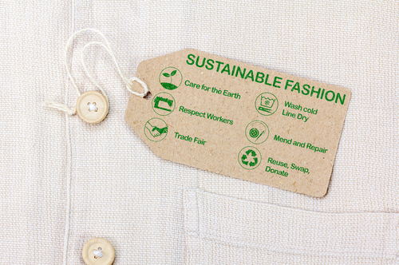

Fashion's Favourite Sustainability Rating Tool Suspended
The Fashion industry’s favourite sustainability rating tool, The Higg Index, has been suspended for its leniency towards fabrics made from fossil fuels. Its undeniable ties to the fast fashion industry did not help.
Key Points:
- The fast-fashion environmental impact index aka Higg Index was suspended after Norway’s consumer watchdog ruled that data from the High Index was misleading.
- The Higg Index is a set of tools created for the fashion industry to assess the sustainability of the materials used in their products. It was created in 2011 by a group of industry leaders including H&M, Walmart, Nike, Levi’s, and Patagonia…
- The Higgs stamp is often used as a technique to instil “trust” and is splattered all over the marketing materials of the fashion brands who got to “pass” the test ( which seems to be rigged!).
- The metrics Higgs index uses are problematic as it favours synthetic fabrics ( made from fossil fuels) - backbone of the fast-fashion industry and has no transparency in the underlying data. A consumer is expected to pay to find out more about the data Index gathers.
- The Norwegian Consumer Authority (NCA) banned the use of the index in marketing and issued a warning to H&M to stop its use on its website.
- The Higg Index may be one of the most widely used sustainability metrics, but it’s far from the only sustainability initiative that often deviates from fashion’s environmental concerns.
- “Authentication, in general, is like this false promise, and it’s a license to greenwash, “George Harding-Rolls, a campaign manager for the nonprofit Changing Markets Foundation.

Read more Fashion news.